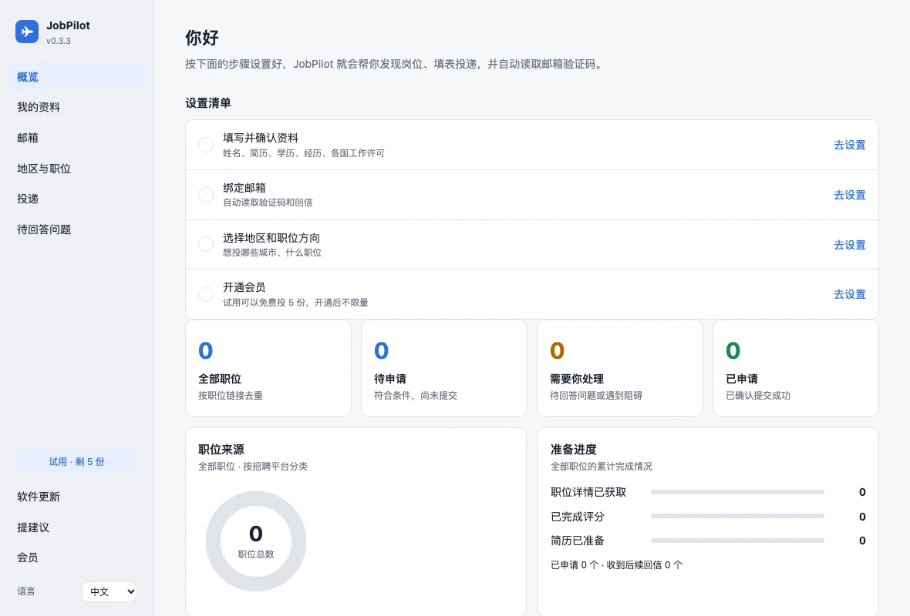

macOS / Apple Silicon
Apple 芯片（M 系列）
安装包见下载页
下载 Mac 版 查看 GitHub 下载页 ↗为 Mac 设计的求职申请助手
发现岗位、填写申请表、自动读取邮箱验证码。先试运行，核对后再正式投递。
macOS 13.5 或更新 · 不支持 Windows、手机
安装包见下载页
下载 Mac 版 查看 GitHub 下载页 ↗安装包见下载页
下载 Mac 版 查看 GitHub 下载页 ↗打开「 → 关于本机」：写着「芯片 Apple M…」选第一个；写着「处理器 Intel…」选第二个。浏览器无法可靠判断芯片，请以这里的信息为准。
先看看，再开始

按地区与职位方向发现已配置雇主的公开岗位。支持 Greenhouse、Ashby、Workday；Lever 当前不支持，并非覆盖所有公司和表单。
导入简历 PDF，辅助填写空白资料，逐项核对后用于申请。遇到未知必填题，可保存回答供后续运行复用。
资料和投递记录主要保存在本机，密码存于 Mac 钥匙串。中英文界面随时切换，连接邮箱后可读取验证码和回信。
第一次使用
无需 Python，也无需终端命令。
下载与你的芯片对应的压缩包，双击解压，再把 JobPilot.app 拖到「应用程序」。请从「应用程序」打开。
应用没有 Apple Developer ID 签名和公证，首次打开会被 macOS 拦下。双击一次 → 点「完成」→「系统设置 → 隐私与安全性」→ 在底部点「仍要打开」，按提示确认。
macOS 15 起，不能再靠右键打开绕过。仅允许你信任的安装包；如提示损坏或会危害电脑，请停止安装并联系卖家核对。
导入简历并逐项确认，绑定邮箱，选择地区与职位方向。先用「试运行（不提交）」检查填写内容，再决定是否正式投递。试运行会访问真实网站，也可能上传简历或注册账号，仅阻止最终提交。
先试用，再决定
正式投递共 5 份，不是每天 5 份。额度用完后仍可试运行，先确认设备和目标岗位是否适合。
会员有效期内每轮最多处理 10 份。额度不代表成功率，也不代表一定有匹配岗位。
使用前，请了解
CAPTCHA / 人机验证由你本人完成，软件不破解或代点；邮箱验证码和验证链接可自动读取，两者不同。
申请会把资料和简历发送给招聘网站；试运行也可能上传简历、创建账号。本机保存资料不等于完全离线，会员、更新和提建议等功能需要联网。
部分网站的条款可能禁止自动化，可能拒绝申请或限制账号。请先阅读网站条款，自行决定是否使用并承担风险。软件不承诺面试、录用或每次提交成功。
JobPilot 是独立软件，与 Workday、Greenhouse、Ashby 等公司没有关联。